Segregating waste by material is the first step of recycling and is required at source by the Philippine Ecological Solid Waste Management Act (RA 9003), yet in barangay materials recovery facilities, schools and cleanup drives it is done by hand, slowly and inconsistently. A camera-based tool that names the material of an item could support these efforts. The problem is also a good test bed for computer vision: materials differ in colour, texture and shine, several pairs look alike (paper vs. cardboard, glass vs. clear plastic), and studio photos used for training look very different from real photos.
This project asks which family of methods is best for the job: carefully hand-designed features, a small network learned from scratch on limited data, or a large network pretrained on ImageNet and adapted. We compare one method of each family on identical data, splits and metrics, including speed, size and training cost, and test how well each survives a shift from clean training photos to real-world photos.
Objectives. (1) choose and justify three well-matched methods; (2) implement HOG and the SVM ourselves and verify them with sanity checks; (3) design, train and validate our own CNN with learning curves and overfitting controls; (4) fine-tune a pretrained MobileNetV3 with correct preprocessing on the same split; (5) report top-1 accuracy, macro-F1, confusion matrices, runtime, parameters and training time; (6) explain with evidence when and why each method succeeds or fails; (7) build an application that runs all three methods and recommends one.
Research question. Which method best sorts trash by material, and does it still work on messy real-world photos after training on clean ones? Sub-questions: (1) how much does each method gain or lose with only 10, 25 or 50 training images per class; (2) which materials does each method confuse, and why; (3) what does each method cost in runtime, parameters and training time; (4) which method should the application recommend by default?
Sources. TrashNet (Thung & Yang, 2016: 2,527 photos of single items on a white/grey background, 512×384) is the train/validation/test data. A second, independent dataset, the web-scraped 12-class Garbage Classification set (Kaggle), is used only as an unseen real-world test set: its three glass classes are mapped to glass, cardboard/paper/metal/plastic/trash keep their names, and battery, biological, clothes and shoes are excluded. 100 images per class were sampled with a fixed seed (600 images).
Cleaning. Exact duplicates were found by MD5: three files are byte-identical but stored under two classes
(e.g. glass176.jpg = plastic152.jpg); since the true label is unknowable, all six copies were dropped.
TrashNet also contains the same object photographed more than once, which would leak between train and test. A
64-bit difference hash, our first attempt, was rejected: on the plain backgrounds it linked 1,053 pairs of
different-class images. We instead compute a detail signature (64×64 grayscale minus a Gaussian blur,
which removes the shared studio lighting, then zero-mean/unit-norm) and link pairs whose correlation exceeds 0.80, a
threshold chosen by inspecting image pairs in several similarity bands. Linked images form groups (29 groups of ≥2
images); each group is assigned to a single split. A seeded, stratified, group-aware 70/15/15 split is saved to
splits/split.json and loaded by every method. A self-check asserts that no validation or test image has a
similarity above 0.80 to any training image (the maximum is 0.756). Finally, 490 of the sampled web images turned out to
be copies of TrashNet photos (similarity 1.0) and were excluded from the real-world set.
| class | train | val | test |
|---|---|---|---|
| cardboard | 282 | 61 | 60 |
| glass | 348 | 75 | 74 |
| metal | 286 | 61 | 61 |
| paper | 416 | 89 | 89 |
| plastic | 336 | 72 | 72 |
| trash | 96 | 21 | 20 |
| total | 1764 | 379 | 376 |
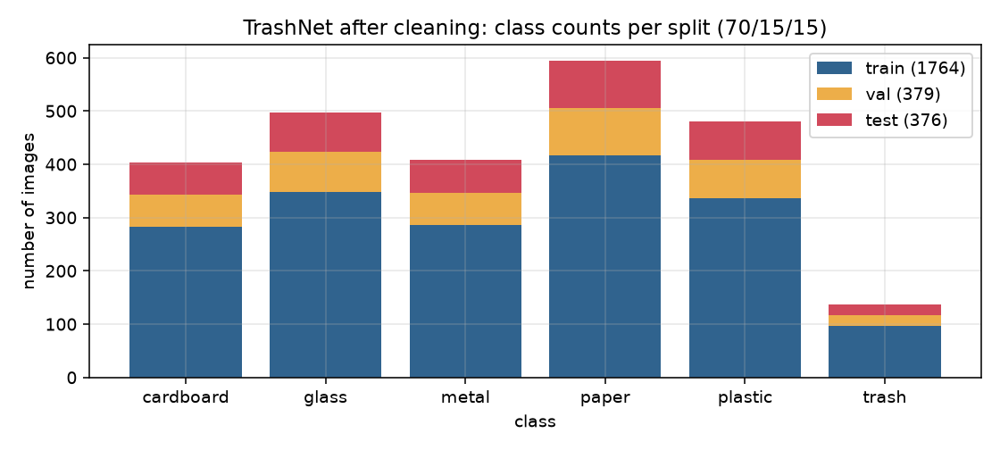
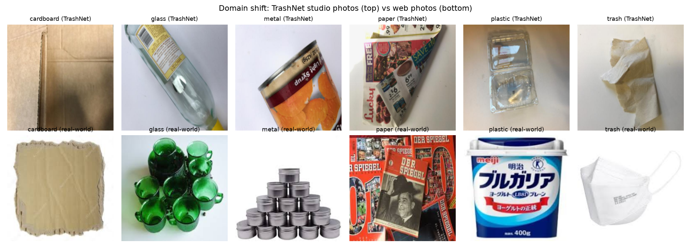
HOG (Dalal & Triggs, 2005) is implemented in NumPy: BT.601 grayscale; gradients with the [−1, 0, 1] kernel; magnitude and unsigned orientation (0–180°); 8×8-pixel cells with 9-bin histograms weighted by magnitude, each vote split linearly between the two nearest bins; overlapping 2×2-cell blocks with L2-Hys normalisation (clip 0.2). A 128×128 image gives a 8,100-D descriptor in about 4 ms. HOG describes local edge orientation, i.e. shape, and deliberately discards colour and absolute intensity.
Linear SVM, also ours: one-vs-rest with all six classifiers optimised jointly, objective λ/2·‖W‖² + meani Σk ci·max(0, 1 − tik(xi·wk+bk))² (the squared-hinge "L2-loss" SVM used by LIBLINEAR), class-balanced weights ci, standardised features, and our own full-batch Adam optimiser with cosine learning-rate decay (300 iterations). Profiling showed that mixing float32 data with float64 weights made NumPy up-cast the data matrix on every product; keeping everything in float32 made each fit 12× faster. Cell size {8, 16}, soft/hard binning and λ ∈ {1, 3, 10, 30, 100} were selected on the validation split (best: 8-px cells, soft binning, λ = 30; the first grid's optimum lay on its edge, so it was extended). An extension that appends a 192-bin HSV colour histogram (our own RGB→HSV) is reported separately as a variant.
Sanity checks (all passed):
| Check | Result |
|---|---|
| (a) synthetic vertical bar / horizontal bar / 45° edge | peak 0–20° (pass) / peak 80–100° (pass) / peak 40–60° (pass) |
| (b) our HOG vs scikit-image hog() on 8 test images | max |diff| = 1.0e-07, correlation = 1.000000 |
| (c) our SVM on a 3-class toy dataset | 100% training accuracy |
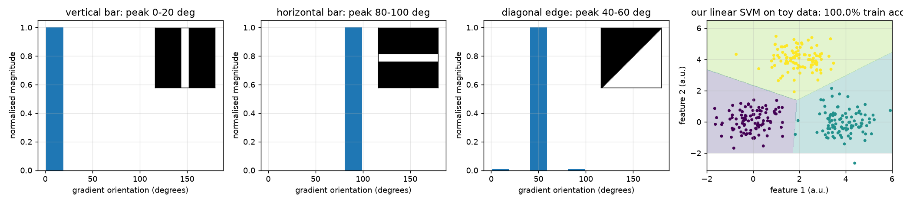
input 3x128x128 Block 1 Conv3x3(3->32) BN ReLU MaxPool -> 32x64x64 Block 2 Conv3x3(32->64) BN ReLU MaxPool -> 64x32x32 Block 3 Conv3x3(64->128) BN ReLU Conv3x3(128->128) BN ReLU MaxPool -> 128x16x16 Block 4 Conv3x3(128->256) BN ReLU Conv3x3(256->256) BN ReLU MaxPool -> 256x8x8 GlobalAvgPool -> Dropout(0.4) -> Linear(256->6) 1.13 M parameters
The network is our own design: four Conv-BN-ReLU-MaxPool blocks with 32/64/128/256 channels, a second convolution in blocks 3 and 4 (where it enlarges the receptive field cheaply on small feature maps; doubling every block would nearly double the compute: 209 vs. 124 s per CPU epoch), global average pooling, dropout 0.4 and a linear layer; 1.13 M parameters with He initialisation. Training uses class-weighted cross-entropy with label smoothing, AdamW, warm-up plus cosine decay, batch 32 and our own per-image augmentation (one random affine warp combining zoom-crop, rotation and horizontal/vertical flips, then colour jitter, tint and random erasing). Early stopping on validation macro-F1 restores the best checkpoint.
Over- vs. under-fitting. A first run with full-strength augmentation, smoothing 0.1 and weight decay 0.05 reached only 47% training and 53% validation accuracy after 15 epochs, both rising very slowly: it was under-fitting, so we stopped it. The final run uses augmentation strength 0.6 (zoom 70–100%, rotation ±15°, jitter ±18%), smoothing 0.05, weight decay 0.02 and learning rate 3·10−3 for 40 epochs; the best validation macro-F1 was reached at epoch 34. Validation accuracy was still creeping up at the end, so more epochs (affordable on a GPU) would probably help a little.
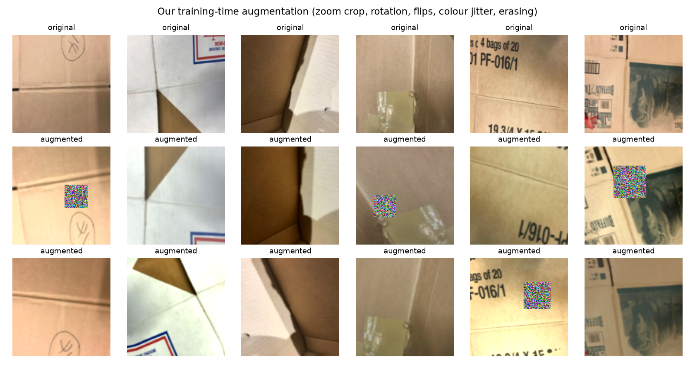
MobileNetV3-Large (Howard et al., 2019) with torchvision's IMAGENET1K_V2 weights. The 1000-class
output layer is replaced by a 6-class layer (same output format as A and B); inputs are 224×224 and normalised with
the ImageNet mean and standard deviation the weights expect. Training has two stages: 3 epochs training only the
classifier head with the backbone frozen (so the random head does not damage the pretrained features), then
fine-tuning at learning rate 5·10−4 (AdamW, cosine) for up to 12 epochs with early stopping
(best epoch 9). The stem and the first three inverted-residual blocks stay frozen with their BatchNorm statistics
fixed: they hold generic low-level filters and, operating at high resolution, dominate the cost (320 vs. 215 s per CPU
epoch). The split, augmentation, loss and stopping rule are identical to Method B. We chose the Large variant over
MobileNetV3-Small (proposed originally) for its higher accuracy; it is still a mobile network.
Every method loads the same saved split and is scored by the same function (our own confusion matrix, accuracy, per-class precision/recall/F1 and macro-F1, averaged over the six classes so the small trash class counts equally). Hyper-parameters and checkpoints are selected on the validation split only; the test split is used once. Uncertainty is reported as 95% bootstrap confidence intervals (2,000 resamples of the test set) and pairs of methods are compared with the exact McNemar test on their discordant predictions. Runtime is measured on the same CPU (Intel i5-1135G7), batch size 1, after 10 warm-up passes, averaged over 200 test images, and includes HOG extraction for A and normalisation for B and C. Seeds are fixed and library versions are printed in the notebook. Because the laptop's NVIDIA driver was too old for the CUDA 12.6 runtime of the only PyTorch build for Python 3.14, all training ran on the CPU; the code automatically uses a GPU when one works (e.g. on Colab).
| Method | Slot | Top-1 acc. (%) [95% CI] | Macro F1 | Runtime (ms/img, CPU) | Params (M) | Train time (min, CPU) |
|---|---|---|---|---|---|---|
| HOG + linear SVM | A. Classical | 52.9 [47.6, 58.0] | 0.519 | 3.6 | 0.00 | 0.3 |
| 4-block CNN (from scratch) | B. From scratch | 71.3 [66.5, 75.8] | 0.694 | 16.8 | 1.13 | 100.8 |
| MobileNetV3-Large (pretrained) | C. Pretrained | 92.8 [90.2, 95.2] | 0.926 | 29.1 | 4.21 | 44.8 |
| HOG + colour histogram + SVM (variant) | A. variant | 59.6 [54.8, 64.6] | 0.587 | 13.6 | 0 | 0.5 |
Runtime: batch size 1 on an Intel i5-1135G7 CPU, mean of 200 test images after 10 warm-up passes, including normalisation (and HOG extraction for A). Training times are CPU wall-clock times on the same laptop (the GPU could not be used, see the documentation).
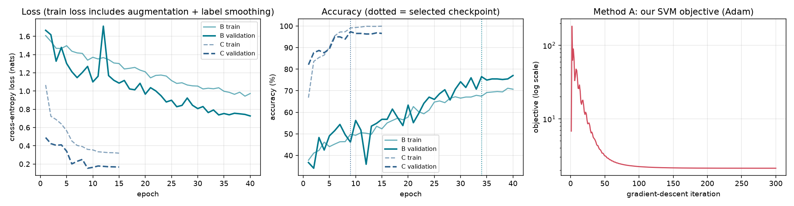
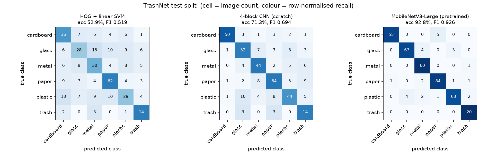
| class | HOG + linear SVM P / R / F1 | 4-block CNN (from scratch) P / R / F1 | MobileNetV3-Large (pretrained) P / R / F1 |
|---|---|---|---|
| cardboard | 0.50 / 0.60 / 0.55 | 0.94 / 0.83 / 0.88 | 0.98 / 0.92 / 0.95 |
| glass | 0.49 / 0.38 / 0.43 | 0.70 / 0.70 / 0.70 | 0.94 / 0.91 / 0.92 |
| metal | 0.45 / 0.49 / 0.47 | 0.69 / 0.72 / 0.70 | 0.88 / 0.98 / 0.93 |
| paper | 0.69 / 0.70 / 0.69 | 0.77 / 0.72 / 0.74 | 0.93 / 0.94 / 0.94 |
| plastic | 0.51 / 0.40 / 0.45 | 0.69 / 0.61 / 0.65 | 0.94 / 0.88 / 0.91 |
| trash | 0.42 / 0.70 / 0.53 | 0.37 / 0.70 / 0.48 | 0.83 / 1.00 / 0.91 |
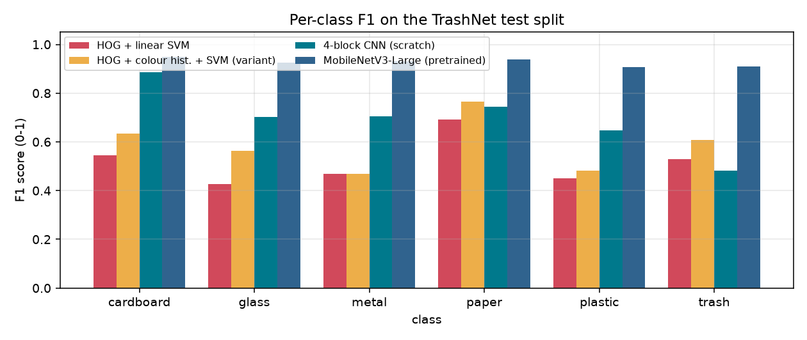
| comparison | only 1st correct | only 2nd correct | exact McNemar p |
|---|---|---|---|
| C vs B | 91 | 10 | 1.7e-17 |
| C vs A | 156 | 6 | 8.1e-39 |
| B vs A | 107 | 38 | 8.6e-09 |
| A+ vs A | 49 | 24 | 4.6e-03 |
The ranking is clear and every pairwise difference is statistically significant (McNemar p < 0.005): the pretrained MobileNetV3 reaches 92.8% accuracy and macro-F1 0.926, our scratch CNN 71.3% (0.694) and HOG + SVM 52.9% (0.519). The 95% intervals do not overlap. Why. HOG encodes only the layout of edge orientations. Material, however, is mostly a matter of colour, reflectance, transparency and fine texture, which HOG throws away, while shape is shared across materials (a bottle can be glass or plastic, a box cardboard or paper). Adding a colour histogram raises A to 59.6% (McNemar p = 0.005), which confirms that the missing colour information is a large part of A's weakness. The scratch CNN learns colour and texture filters itself, but 1,764 images are not enough to learn robust features from random weights. MobileNetV3 starts from features learned on 1.28 million ImageNet images, which already separate glossy from matte, transparent from opaque, printed from plain, so a small amount of trash data is enough to map them to materials. Its training curves show a small generalisation gap (training accuracy ~99%, validation ~97%), well controlled by early stopping.
| Method | TrashNet test acc. (%) | Real-world acc. (%) [95% CI] | Real-world macro F1 | Drop (points) | Accuracy retained |
|---|---|---|---|---|---|
| HOG + linear SVM | 52.9 | 9.3 [6.8, 11.8] | 0.084 | 43.6 | 18% |
| HOG + colour histogram + SVM (variant) | 59.6 | 16.5 [13.5, 19.3] | 0.152 | 43.1 | 28% |
| 4-block CNN (from scratch) | 71.3 | 36.2 [32.3, 40.2] | 0.326 | 35.1 | 51% |
| MobileNetV3-Large (pretrained) | 92.8 | 62.8 [59.0, 66.7] | 0.582 | 30.0 | 68% |
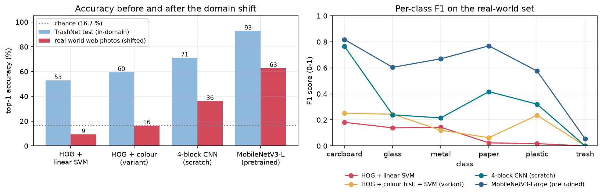
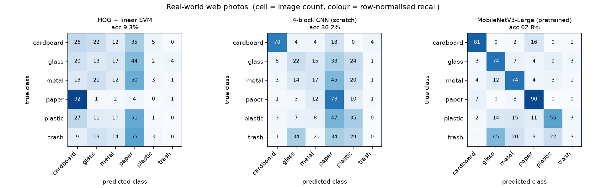
All methods lose accuracy on real-world photos, and the gap grows as the features become more hand-made: MobileNetV3 keeps 62.8% (68% of its test accuracy), the scratch CNN 36.2% (51%) and HOG + SVM collapses to 9.3%, below the 16.7% chance level (16.5% with colour). The confusion matrices show why A falls below chance: it labels most web photos paper and real paper cardboard, i.e. its decision rules encode TrashNet's edge statistics (one item, centred, on a blank table) rather than material. The scratch CNN also over-predicts paper and plastic, and Grad-CAM (Fig. 13) shows that it often attends to the background and shadows, cues that are specific to the studio set-up. MobileNetV3 attends to the object and transfers best: excluding the trash class its real-world accuracy is 74.8%. No method recognises the web "trash" class (F1 ≤ 0.05): in TrashNet "trash" means food wrappers and packaging, whereas in the web set it is mostly diapers, toothbrushes and similar items. This is a change of label definition, not only of image style, and no classifier can learn it from the training data. Two lessons follow: test on data from the deployment setting, and fine-tune on local photos before real use.
| Method | 10 / class (60) | 25 / class (150) | 50 / class (300) | all (1764) |
|---|---|---|---|---|
| HOG + linear SVM | 36.7 / 0.36 | 35.4 / 0.36 | 41.0 / 0.41 | 52.9 / 0.52 |
| 4-block CNN (from scratch) | 43.4 / 0.43 | 58.8 / 0.58 | 61.4 / 0.60 | 71.3 / 0.69 |
| MobileNetV3-Large (pretrained) | 67.6 / 0.66 | 75.5 / 0.73 | 83.8 / 0.82 | 92.8 / 0.93 |
Cells: test accuracy (%) / macro F1.
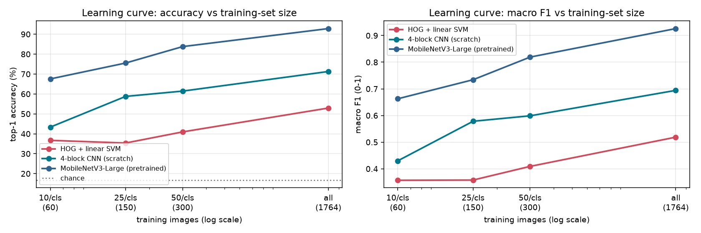
With only 10 images per class (60 images) the pretrained model already reaches 67.6%, far above the scratch CNN (43.4%) and HOG + SVM (36.7%); at 50 images per class the values are 83.8%, 61.4% and 41.0%. Strikingly, MobileNetV3 trained on only 10 images per class (67.6%) comes close to our scratch CNN trained on all 1,764 images (71.3%). This is the pattern transfer-learning theory predicts: the pretrained network only has to learn a 6-way read-out (plus small adjustments) on top of features that already exist, so its sample complexity is low. The scratch CNN must learn every filter from the data; it gains the most overall (from 43.4% to 71.3%) and its curve is still rising, so it is data-limited. HOG + SVM has no feature learning at all: it stays between 35% and 41% up to 50 images per class and reaches only 52.9% with all data, because its fixed features cap what any amount of data can teach the linear classifier.
| Method | Acc. (%) | Runtime (ms/img, CPU) | Params (M) | Model file (MB) | Train time (min, CPU) |
|---|---|---|---|---|---|
| HOG + linear SVM | 52.9 | 3.6 | 0.00 | 0.3 | 0.3 |
| HOG + colour hist. + SVM (variant) | 59.6 | 13.6 | 0.00 | 0.3 | 0.5 |
| 4-block CNN (scratch) | 71.3 | 16.8 | 1.13 | 4.5 | 100.8 |
| MobileNetV3-Large (pretrained) | 92.8 | 29.1 | 4.21 | 16.8 | 44.8 |
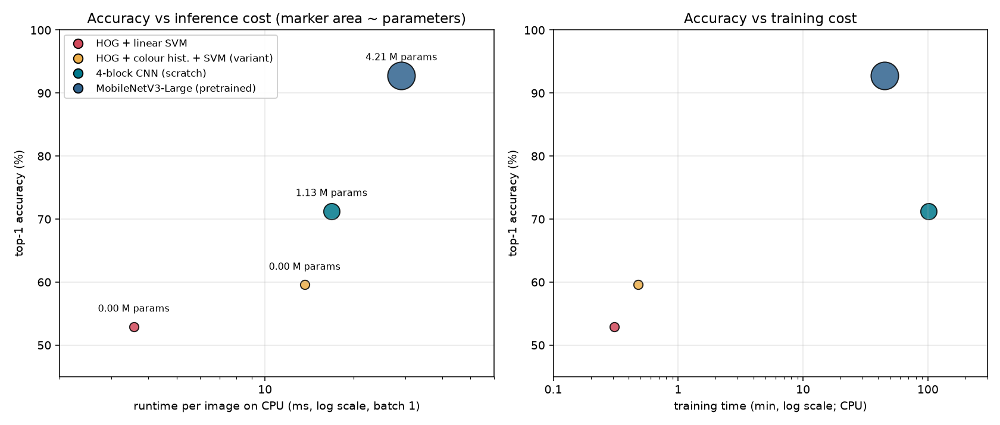
HOG + SVM is by far the cheapest: 3.6 ms per image on the CPU, a 0.3 MB model and seconds of training, but its accuracy is the lowest. The scratch CNN needs 16.8 ms and 1.13 M parameters; MobileNetV3 needs 29.1 ms and 4.21 M parameters (17 MB), still well within real-time on a laptop CPU (about 34 images per second) and designed for phones. Notably, the pretrained model trained in less time than the scratch CNN (it converges in a handful of epochs because it starts from good features), so pretraining reduces training cost as well as error. Per point of accuracy, the extra ~25 ms of MobileNetV3 is clearly worth it for this application.
| Method | Most frequent confusions on the test split (true → predicted, count) |
|---|---|
| HOG + linear SVM | glass→metal (15), plastic→cardboard (13), plastic→paper (10) |
| 4-block CNN (from scratch) | plastic→glass (10), paper→trash (9), plastic→paper (8) |
| MobileNetV3-Large (pretrained) | cardboard→paper (5), plastic→glass (4), glass→metal (4) |
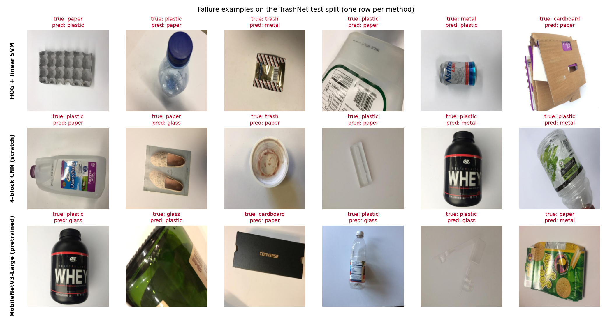
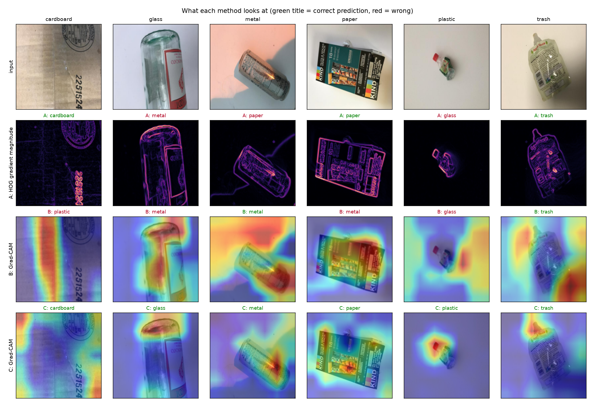
A's errors follow its blindness to colour and transparency: glass is read as metal (both are shiny with strong specular edges) and plastic as cardboard or paper. B's most frequent errors are plastic→glass (both transparent) and paper→trash/metal. C makes few errors, mainly cardboard→paper and plastic↔glass, the pairs that are hard even for people from one photo. On the test split all three methods are correct on 159 of 376 images and all wrong on only 13; C alone is right on 57, while C is wrong but A or B right on only 14. A majority vote of the three (87.8%) is therefore worse than C alone: the weaker methods out-vote C more often than they rescue it. The Grad-CAM maps (Fig. 13) explain the domain-shift result: C's evidence lies on the object (bottle neck, can rim, the item itself), whereas B often relies on background regions.
Experiment 2 showed that the studio-trained models fail on real-world photos, and a phone app only ever sees
real-world photos. We therefore added web photos from the 12-class dataset to TrashNet's training split
(src/prepare_mixed.py) under strict leakage rules: none of the 600 real-world test photos is used, nor any web
image whose detail signature correlates above 0.80 with one of them; no web image that is a near-copy of any
TrashNet image is used (this removed almost all of TrashNet again: the web set contains it, so TrashNet test photos
cannot leak); near-duplicates inside the web set stay together in train or validation. This gives
3,419 training images (1,764 TrashNet + 1,655 web) and 240 extra validation images. Both test sets are
unchanged. Because web datasets also contain the same picture cropped, mirrored or watermarked, which a pixel
signature cannot catch, we ran a second check with ImageNet MobileNetV3 features (tools/leakage_check.py):
real-world test photos whose nearest web-training photo has cosine similarity above 0.85 (a conservative cut chosen by
inspecting pairs) are set aside, and accuracy is also reported on the remaining clean subset.
| class | web candidates | near-copies of TrashNet (removed) | near-copies of test photos (removed) | usable | added to train | added to val |
|---|---|---|---|---|---|---|
| cardboard | 791 | 403 | 2 | 386 | 300 | 40 |
| glass | 1916 | 474 | 19 | 1424 | 300 | 40 |
| metal | 669 | 410 | 4 | 255 | 215 | 40 |
| paper | 950 | 594 | 0 | 356 | 300 | 40 |
| plastic | 765 | 477 | 8 | 280 | 240 | 40 |
| trash | 597 | 0 | 22 | 575 | 300 | 40 |
| Method | TrashNet test acc. (%) TrashNet-only → mixed | Real-world acc. (%) [95% CI] TrashNet-only → mixed | Real-world macro-F1 | 'Not sure' threshold | Real-world answered / accuracy of answers | Train time (min, CPU) |
|---|---|---|---|---|---|---|
| HOG + linear SVM | 52.9 → 47.9 | 9.3 → 47.8 [44.0, 51.5] | 0.465 | 0.45 | 4% / 88.0% | 4 |
| 4-block CNN (from scratch) | 71.3 → 69.7 | 36.2 → 78.8 [75.5, 82.2] | 0.782 | 0.95 | 21% / 98.4% | 186 |
| ★ MobileNetV3-Large (pretrained) | 92.8 → 94.1 | 62.8 → 97.7 [96.3, 98.8] | 0.977 | 0.65 | 94% / 99.5% | 102 |
Same test sets as Experiments 1 and 2. Arrows: model trained on TrashNet only → same method retrained on TrashNet + web photos with identical architecture and hyper-parameters. ★ = method BIN answers with (best real-world macro-F1).
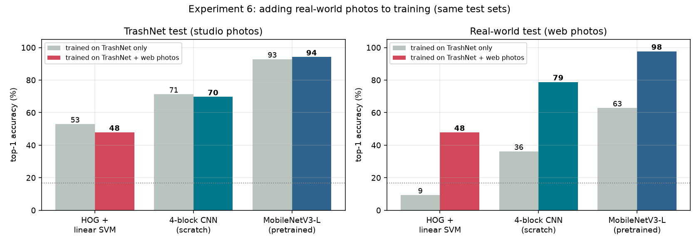
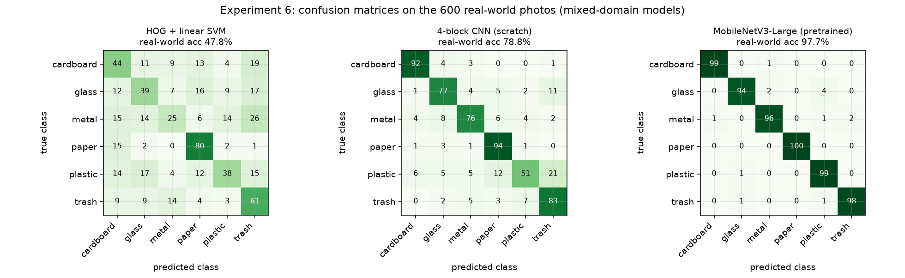
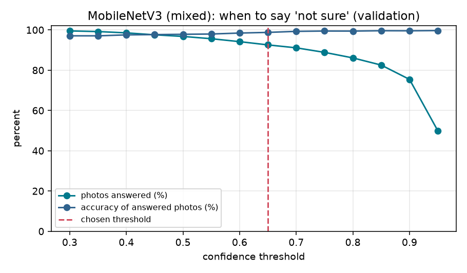
Adding real-world photos to training is by far the most effective change in this project. On the unchanged
real-world test set, MobileNetV3 rises from 62.8% to 97.7%, the scratch CNN from 36.2% to
78.8% and HOG + SVM from 9.3% to 47.8%, while accuracy on the studio test photos changes little
(MobileNetV3 92.8% → 94.1%, CNN 71.3% → 69.7%, HOG + SVM 52.9% → 47.9%).
On the conservative clean subset (476 test photos without any near-duplicate in training) the accuracies are
97.7% (MobileNetV3), 78.2% (CNN) and 43.7% (HOG + SVM), so the gain of the networks is not caused by
leakage (results/results_table_exp6.md). Why. A classifier can only be as
good as the match between its training and deployment images: with web photos in training, the networks no longer rely
on the studio background, and the different meaning of "trash" in the web set (diapers, toothbrushes, masks) is learned
from examples. The ranking of the methods does not change: the pretrained network adapts best, the scratch CNN profits
from the doubled data but stays far behind, and HOG + SVM cannot represent the variety of real-world backgrounds with
edge-orientation histograms. The "not sure" threshold of MobileNetV3-Large (pretrained) (65%) was chosen on validation as the lowest one
whose answers are at least 98.5% correct (98.8%); on the real-world test set it answers 94% of the photos,
and 99.5% of those answers are right; the rest get "not sure".
Which method best sorts trash by material? The pretrained MobileNetV3-Large: 92.8% test accuracy (macro-F1 0.926) versus 71.3% for our scratch CNN and 52.9% for HOG + SVM, significant in every pairwise test, best in the small-data regime, and fast enough for a phone (29 ms on a laptop CPU).
Does it still work on messy real-world photos after training on clean ones? Not well enough: trained on studio photos only, it drops to 62.8% (and HOG + SVM to 9.3%, below chance). Adding real-world photos to training fixes this (Experiment 6): 97.7% on the same unseen real-world photos, with no loss on the studio photos. The ranking of the methods is the same in every setting, so BIN answers with MobileNetV3 trained on mixed data, and says "not sure" when its confidence is below 65%.
The comparison is turned into BIN, an application whose logo is a trash can with a large B on its
cover. The main version is a phone app (a Progressive Web App in web/, served at
https://karlsxo.github.io/Computer-Vison---Final-Project/ and installable with Add to Home Screen); a desktop/Colab
version uses Gradio (app/app.py, logic in src/system.py) with the same models and rules.
Input: BIN opens directly on a live camera view with a square scanner frame; the photo is cropped to the frame so the item fills the image like the training photos. The user can also choose a photo from the gallery, or use the phone's camera app when the live camera is not allowed. Processing: all three methods run on the phone: HOG + SVM in JavaScript (a line-by-line port of our NumPy code) and the two networks as ONNX models with onnxruntime-web (WebAssembly); Pillow's bilinear resize is re-implemented exactly so the networks see the same pixels as in Python. Output drawn on the input: the answer (or NOT SURE) over the photo, recyclable or residual, what to do with the item, and every method's label, confidence and runtime on the phone. Recommendation: BIN answers with the method that has the best macro-F1 on real-world photos (MobileNetV3-Large (pretrained)), explains why with the measured numbers, and says "not sure" below the calibrated threshold. The user can correct a wrong answer; scans are kept in a history on the phone. Photos never leave the device and the app works offline after the first visit (about 32 MB). Verification: the app's own code was run in a headless browser on all 976 test photos and compared with the Python models: the predictions agree on 100% of them for both networks and on at least 99.8% for HOG + SVM (one real-world image decodes slightly differently in the browser); an emulated-phone test exercises every screen with a fake camera.
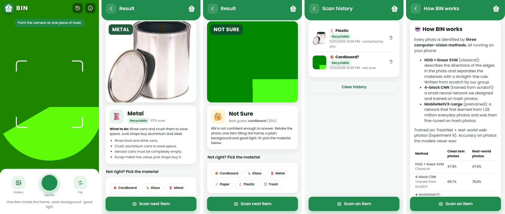
| Test set | Method | Same prediction as Python | Accuracy in the app | Accuracy in Python |
|---|---|---|---|---|
| TrashNet test (376) | HOG + linear SVM | 100.0% | 47.9% | 47.9% |
| TrashNet test (376) | 4-block CNN (from scratch) | 100.0% | 69.7% | 69.7% |
| TrashNet test (376) | MobileNetV3-Large (pretrained) | 100.0% | 94.2% | 94.2% |
| Real-world (600) | HOG + linear SVM | 99.8% | 47.8% | 47.8% |
| Real-world (600) | 4-block CNN (from scratch) | 100.0% | 78.8% | 78.8% |
| Real-world (600) | MobileNetV3-Large (pretrained) | 100.0% | 97.7% | 97.7% |
Phone-app check (tools/verify_web.py): every test photo classified by the app's own code (PIL-exact resize, JavaScript HOG + SVM, ONNX networks) in a headless browser and compared with the Python models.
Learned features beat hand-designed ones for material recognition, and pretrained features beat features learned from scratch on a small dataset, by a wide and statistically significant margin on clean data, in the small-data regime and under domain shift. The decisive factor for a working application, however, was the training data: once real-world photos were added (Experiment 6), the pretrained model went from 62.8% to 97.7% on unseen real-world photos, so BIN can be trusted on everyday pictures. The classical pipeline remains valuable for what it teaches: it is transparent, tiny and fast, and its failures show exactly which visual cues (colour, transparency, texture) material recognition needs. Careful data handling mattered throughout: identical files with conflicting labels, near-duplicate shots, 490 real-world images that were TrashNet copies, and cropped or watermarked copies between web training and test photos would otherwise have inflated the results.
Limitations. The real-world photos are web photos, not photos taken in Iloilo; "trash" is a vague class; images
are squashed to a square; all training ran on a laptop CPU, which limited the epochs of the scratch CNN; each
configuration was trained with one seed; and the findings apply to these three methods. BIN recognises only the six
materials and one item per photo; anything else (food, batteries, several items) is outside its training.
Future work: collect labelled phone photos in Iloilo (evaluated automatically from data/own_photos/) and
fine-tune on them; add classes such as biodegradable and special waste; detect several items per photo.
(To be completed by the group: one paragraph listing what each member did.) Suggested split: Member 1 — Method A (HOG, SVM, sanity checks); Member 2 — Method B (architecture, training, curves); Member 3 — Method C (fine-tuning, preprocessing); Member 4 — data cleaning, split, real-world set, experiments 2–5; Member 5 — application, demo video, report and slides. Every member reviewed the others' code.
Use of AI tools. An AI coding assistant (Claude) was used to help write and debug code, run experiments, produce plots and draft the documentation, report and slides. All design decisions, results and text were reviewed by the group, and every member can explain every line of the code.